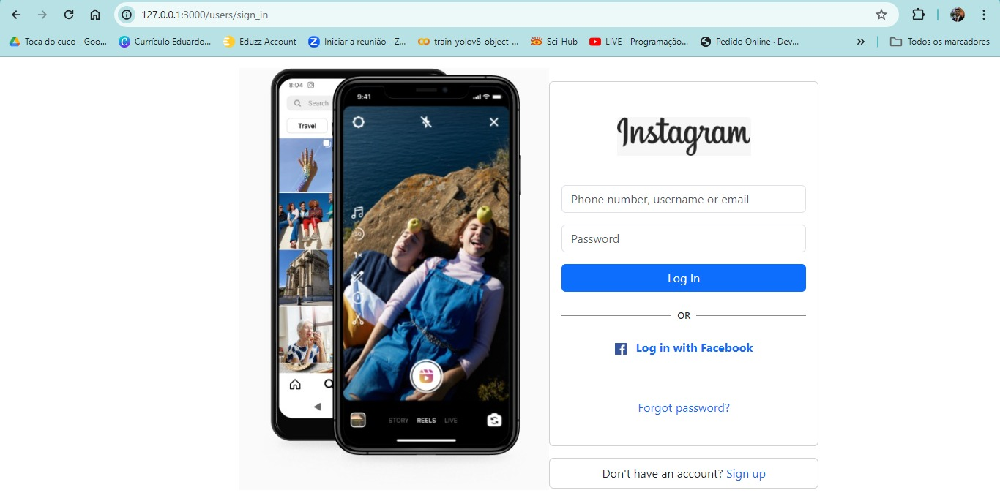

This is my website
My Profile
I’m passionate about technology, particularly in the realm of Ruby on Rails development. Alongside coding, I enjoy writing about various topics such as technology, music, and more. Welcome to my blog, where I share my thoughts and experiences.
About
I’m a communicative person, friendly, and adaptable. Having lived in different cities and countries like Leipzig - DE, London - UK, and Vancouver - CN, I’m accustomed to diverse environments. Originally from Recife, Pernambuco, Brazil, I hold a degree in Mechatronics Engineering from UPE and am currently pursuing postgraduate studies in Robotics and Artificial Intelligence at CIn - UFPE. Additionally, I’m a Masters student in Computer Science at CIn - UFPE.
My Projects
- Ruby on Rails Blog: Explore my writings on Ruby on Rails development and other topics.project
- Instagram Clone: Check out my project where I built an Instagram clone using Ruby on Rails.project
- Robotics Research: Discover my ongoing research with robotics
- Dog Website: Check out my project where I built an Dog Social Media.project

Contact

Feel free to reach out to me at wanderley.eduardo@gmail.com.